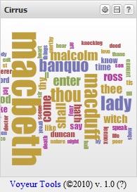

Welcome to the Voyeur Drop widget!
The Voyeur Drop Widget allows you to place Voyeur where ever you would like. Voyeur is a web-based text analysis environment. For more information, please visit Hermeneuti.ca. |

|